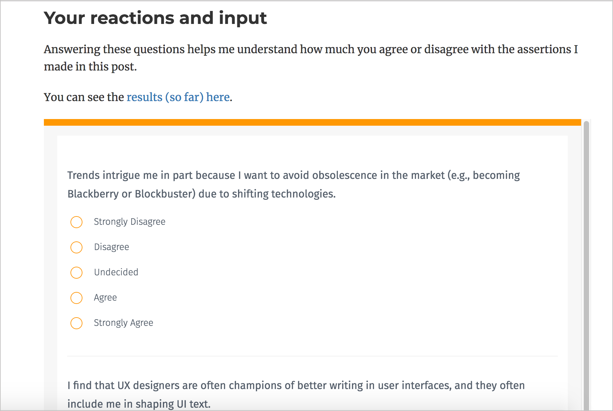

Overview of my argument
- Technology is getting more specialized/complex.
- This complexity drives up the value of technical knowledge, making it more prized than writing skills.
- To handle the complexity, technical writers must play increasingly collaborative roles with engineers to create documentation
Agree/disagree survey
http://bit.ly/tomtrends | http://bit.ly/tomtrendsresults
Questions?